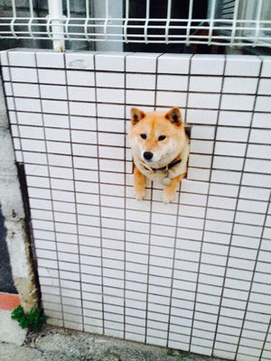

Shiba Inus Can Fit Anywhere
An ancient Japanese breed, the Shiba Inu is a little but well-muscled dog once employed as a hunter. Today, the spirited, good-natured Shiba is the most popular companion dog in Japan. The adaptable Shiba is at home in town or country.